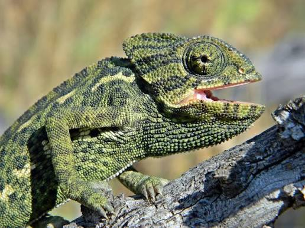

CAMALEÓN COMÚN
Chamaeleo chamaeleon

Modifica el aspecto de su epidermis para escapar a la vista de sus enemigos o de sus presas y para demostrar emociones.
- Nombre científico: Chamaeleo chamaeleon
- Camuflaje: Modificar el aspecto de su epidermis para escapar a la vista de sus enemigos o sus presas y demostrar emociones.
- Hábitat: Zonas de matorral, pinares, huertos y cultivos tradicionales de clima mediterráneo.
- Sentido: Visión.
- Uso: Caza y supervivencia.
- Función: Ocultar.